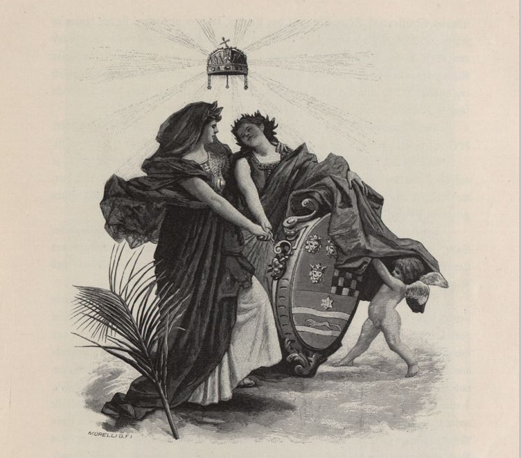

1Avtor preučuje zadnji zvezek enciklopedije Kronprinzenwerk, ki obravnava Kraljevino Hrvaško in Slavonijo, v luči interakcij med procesi oblikovanja cesarstva in oblikovanja naroda oz. načine, kako so se pričakovanja imperija glede enciklopedije Kronprinzenwerk razlikovala od končnega izdelka lokalnih strokovnjakov. Posebna pozornost je namenjena uredniku zvezka Izidorju Kršnjaviju in njegovi uredniški politiki, pa tudi podobi Hrvaške in Slavonije in hrvaškim notranjim javnim razpravam, ki so potekale med urejanjem enciklopedije Kronprinzenwerk, ter političnim učinkom, ki jih je prinesel njen izid.
2Ključne besede: oblikovanje cesarstva, nacionalizem, Habsburška monarhija, Kronprinzenwerk, Kršnjavi
1The author examines the last volume of the Kronprinzenwerk on Croatia-Slavonia in the context of the interaction between empire- and nation-building processes, that is, the ways in which imperial expectations of the Kronprinzenwerk differed from the final product done by the local experts. Special emphasis is put on the volume’s editor, Izidor Kršnjavi and his editorial policy as well as on the image of Croatia-Slavonia and internal Croatian public debates which occurred during the editorial process of the Kronprinzenwerk and its political implications.
2Keywords: empire-building, nationalism, Habsburg Monarchy, Kronprinzenwerk, Kršnjavi
1The Austro-Hungarian Empire in Word and Picture (Die österreichisch-ungarische Monarchie in Wort und Bild – also known as Kronprinzenwerk) was initiated by Crown Prince Rudolf in 1884. Contributions were mostly of folkloristic character describing and depicting each region’s customs, architecture, nature, geology, botany, etc. The idea behind the whole work was to represent the ethnic, cultural and linguistic diversity of the Habsburg Monarchy. The Monarchy was presented as a state that transformed individual cultures into a new common culture from which all cultures profited. The implicit argument of the series was that the Monarchy had always been culturally and linguistically heterogeneous, so none of the ethnic groups can claim exclusive right to the territories.1 Regina Bendix rightly noticed that the Kronprinzenwerk symbolically “wanted to undermine the idea of territorial exclusivity for individual ethnicities,” but failed to notice “the close connection between nationalism and essentialized cultural representation.”2 The Kronprinzenwerk was part of the imperial cosmopolitan state’s response to increasing nationalisms throughout the Monarchy. The Kronprinzenwerk was published between 1885 and 1902 in 24 volumes with contributions from more than 400 authors and with 4,500 illustrations. There were two editions of the Kronprinzenwerk – Austrian and Hungarian. While the Austrian edition enjoyed commercial success, the Hungarian edition did not find a market, probably because the cultural policy it represented was not supported and advertised by the political circles in Hungary.3
2The last volume of Kronprinzenwerk was on Croatia and Slavonia, with Izidor Kršnjavi as its editor. Kršnjavi had been educated in Vienna in the 1860s as an art historian and painter. During his studies, Kršnjavi was largely influenced by Viennese liberal circles and especially by his professor Rudolf von Eitelberger.4 After returning to Croatia, Kršnjavi started teaching at the newly opened Zagreb University and became an important member of the People’s Party under the leadership of the new Ban Khuen Hedervary during the 1880s. From 1891 to 1896, Kršnjavi held the position of Minister of Religious Affairs and Education. He was forced to resign after a group of students burned the Hungarian flag during Emperor Franz Joseph’s visit to Zagreb in 1895. After his resignation, Kršnjavi continued teaching at the Zagreb University and remained one of the proponents of Dualism up until 1906 when he joined the Croatian Party of Right.
3The main intent of my article is to briefly outline the last volume of the Kronprinzenwerk and the editorial ideas behind it, namely to present Croatia as a region of the Western cultural circle with a specific territory and culture. Special emphasis shall be placed on the ideological discrepancy seemingly apparent between the original project formulation and the content of the volume under research. Finally, I want to point out some of the key issues in the internal Croatian debates regarding the last volume of the Kronprinzenwerk.
1The last volume on Croatia and Slavonia was published in 1902. It was divided into four parts – history, people, culture and descriptions of particular towns and regions. The history section was divided into three parts – history of antiquity, history of national rulers and the Arpad dynasty, and history of the Anjou dynasty until the beginning of the modern period. As an addition to this history overview, there was a special article on church relations with the Serbian population. The section “people” consisted of three articles discussing the old folk religion, family relations and housing, folk crafts, and folk music. The section dealing with culture discusses Croatian and Serbian literature, and Croatian art and education. The last section gives brief descriptions of the land, namely ones of economic relations; forestry and hunting; regions of Primorje (Littoral region of the northern Adriatic), Lika, Turopolje, Zagorje, Podravina, Slavonia, Posavina and Sriem; cities of Zagreb, Senj, Žumberak/Sichelburg, Požega, Osijek/Esseg; and natural wonders such as the Plitvice lakes, the Kalnik hill, and the granite hills of Moslavina.
2In general, Kršnjavi’s introduction was a brief, poetic geographical description of the land. The country was described and illustrated as small picturesque towns which lacked modernization. Kršnjavi praised the role of the Habsburgs in modernizing these places by introducing railways and sewer systems. Such argumentation was typical for all of the Kronprinzenwerk volumes – all regions and crownlands were inhabited with various groups of people that peacefully coexisted with the Habsburgs who served as legal protectors and who worked to modernize the less developed regions. Kršnjavi used geographical specificities such as the Sava and Drava rivers, hills and karst in order to create a separate character of Croatia and Slavonia distinct from Dalmatia. In his view, geographical conditions were also reflected in people’s characters depending on the geographical conditions of where they lived. He divided the people of Croatia into five groups based on region – Zagorje (Northern Croatia), Posavina (people around the Sava river), Podravina (North-eastern Croatia), Lika (the former Military Border), and the Serbs, although they inhabited all the regions.
3People from Zagorje were portrayed as blond, of medium height with bright eyes and strongly developed feelings for the respect of the law and justice. They were well organized and would easily rebel if someone did not respect their rights. In order to support this claim, Kršnjavi cited various peasant rebellions from the region and interpreted them as fights against breaches of the law. Contrary to the Croatians from Zagorje, Croatians from Podravina and the Posavina region were portrayed as dark-haired, easy-going and emotional. Croats from Lika were presented as tall, strong, resilient, traditional and unwilling to adapt to novelties. They were also presented as working in the forests outside their hometowns where they would earn money to support their families back at home.5
4These regional stereotypes were more picturesque and provisional, rather than racial. The most notorious racial stereotype of the region is probably the one developed during the First World War by the Serbian geographer Jovan Cvijić in which he claimed the Dinaric race was comprised of barbaric Highlanders and more civilized Lowlanders.6 One of the reasons for such difference was political. While Cvijić’s Balkanist discourse tried to prove differences between peoples of the Balkans and the Western world, Kršnjavi sought to present Croats from various regions as possessing the same culture as its Western counterparts, mostly with regard to “civilization” as it related to respect for laws and an organized state.
5Kršnjavi portrayed the Serbs in Croatia similarly to the Croats, as sharing common folk traditions and language, but separated by their usage of the Cyrillic script and the Orthodox religion. In Kršnjavi’s view, the difference between Catholicism and Orthodoxy was not only theological, but also cultural:
6“It is not the dogmatic nuances that should be considered as the point of division, but more probably it is the centuries long membership in two different cultural circles, to western Catholic and to Greek eastern orthodox, that separate the Croats and the Serbs, despite using the same language.”7
7By making such a division, Kršnjavi implied that the Croats belong to the nations of the West, possessing their own culture and history, while the Serbs were grouped with the barbarian nations of the East, lacking culture and history. Nevertheless, one of the advantages of traditional Serbian lifestyle was its preservation of folk poetry, songs and crafts, contrary to “more cultural” Croatians that had been exposed to foreign cultural forms because of their participation in the intellectual life of the West.
8Although the Croats differed among themselves regionally, Kršnjavi also claimed that they shared common characteristics – honesty, reliability, religiosity, compassion and morality. In Kršnjavi’s view, such unique and traditional Croatian virtues, along with membership in the Hungarian kingdom, were the main reasons why the Croatian population had kept its political and national individuality, despite unfavorable geographical conditions.
9The next article of the volume dealing with the earliest history of the Croatian lands up until the middle ages was written by Kršnjavi’s former student and colleague, Ćiro Truhelka. His main aim was to pinpoint that the Croatian territories were part of cultural Europe since ancient times without temporal disruptions, even though they were not inhabited by the Croats. He constructed such continuity through similarities between Croatian Neolithic archeological findings, their Western counterparts that were replaced by Illyrian and Celtic cultures, and, finally, by connecting these territories to the Roman Empire.8 Although he did not explicitly state it, Truhelka’s incorporation of the Roman Empire to his argument was probably meant to prove the affiliation of the Croatian territories to, what was considered at the time, the last common culture of Europe. Even though the Croats did not inhabit the land at that time, being a part of cultural Europe could be proven on various levels by continuity of ornaments or architectural forms that the Croats could have adopted from the domestic population and used further after their migration to the region. The fact that they were intellectually capable of learning such complex knowledge, should also have secured their place among the cultural nations. Such a view opposed the one that argued that the Croats had arrived in the completely empty and desolated region of Dalmatia (there is a metaphor of Dalmatia as an empty house) expressed by the first professional Croatian historian, Franjo Rački, which was adopted by the majority of historians. While Truhelka wanted to show continuity and membership in the cultural sphere of the Roman Empire, Rački wanted to show how the Croats had migrated to an empty territory, so that no other nation could claim those territories.
10The next article in the volume, The Time of National Rulers and the Rule of the Arpads by Kršnjavi, was highly criticized. Kršnjavi gave a very brief description of Croatian history during the reign of the national rulers and the Arpad dynasty. Interestingly, he gave only slightly more space to the Croatian duke, Zdeslav, who ruled for only two years (878-879) with the help of Byzantium, and fell as a victim of a conspiracy. In Kršnjavi’s view, Zdeslav was an important ruler because he practically managed to unify all of Croatia, even if it was still theoretically divided. Under Zdeslav’s rule, Dalmatian coastal towns stopped paying a tribute to Byzantium, however they continued to pay a lower tax as a sign of Byzantium’s sovereignty.9 Most likely, Kršnjavi’s intention was to point out the importance of ruling a territory even if it was still nominally under another power, as well as Croatian historical rights to the Dalmatian coastal towns which were subjects of dispute between Croatian and Italian national activists.
11Ironically, Kršnjavi was attacked for writing separate histories of Croatia and Dalmatia for the Kronprinzenwerk, although the majority of his historical article deals exclusively with the Croatian medieval history in Dalmatia. It would have been impossible for Kršnjavi, or anyone else, to write on early Croatian medieval history without discussing Dalmatia since there was almost no documentation for such an endeavor. If anything, Kršnjavi should have been “accused” of only writing the history of Dalmatia and for omitting the rest of Croatia. Generally, Kršnjavi presented Dalmatia as an integral part of the Croatian Kingdom. It remains unclear whether the Austrian and Hungarian editorial boards were aware of Kršnjavi’s editorial strategy or not, or whether they just lacked interest since his was the last volume of the series.
12The last part of the historical section was written by Ivan Bojničić and provided an overview of Croatian history from the late middle ages until contemporary times. The article lacked interpretation and consisted only of brief chronological data. Bojničić did not even interpret the conspiracy from the mid-seventeenth century of Nikola Šubić Zrinski and Fran Krsto Frankopan against the emperor as a struggle for independence, which was one of the favorite arguments of anti-Austrian Croatian national activists. Nevertheless, Bojničić did reproduce a few politically correct messages on the last two pages of the article. First, he stated: “Modern Croatia stands on the side of historical rights and is, however, under the rule of all those factors through which it secured natural development of national individuality.”10 Since Bojničić held anti-Hungarian stances, he probably used the phrase “all those factors” as a compromise with the editorial board and Kršnjavi. According to this view, he presented Croatia as an autonomous unit which had managed to develop and preserve its national character/identity because it was part of larger state formations with Austria and Hungary. Bojničić also tackled the problematic nature of Croatia’s union with Hungary in the following away. In his view the Triune Kingdom formed a political community with Hungary, but that it constituted a separate territory and population:
13“The realms of Croatia, Slavonia and Dalmatia constitute together with Hungary and its adjoining lands one and the same political community (Gemeinsamkeit), however Croatia-Slavonia possesses a distinct territory, and its inhabitants are one political nation.”11
14Such reasoning presupposed that the entire population of Croatia-Slavonia, regardless of nationality, formed a political nation that is itself supra-national and that consisted of various national and cultural elements. This view more broadly corresponds to the main argument of the Kronprinzenwerk, that the population of the Monarchy also constituted one political nation composed of various elements. Interestingly, Bojničić omitted Dalmatia from his claim that Croatia-Slavonia has its own territory and population, yet he was not attacked in the daily press even though this argument had been made against Kršnjavi. It is also unclear from Bojničić’s line whether he considered the population of Dalmatia to be a member of “one political nation” or not.
15Finally, Bojničić concludes that Hungary wants the reunification of Croatia with Dalmatia (which was a crownland of the Austrian half of the Dual Monarchy), and that Croatian culture developed recently due to dualism as well as because of the Croatian-Hungarian compromise. Interestingly, the first claim managed to be approved by the Hungarian editorial board, although Hungary was probably the last one to fight for the incorporation of Dalmatia into Croatia, especially under Croatia’s conditions. Even if such unification was debated, it is more likely that Dalmatia would have to be incorporated into Hungary as a separate crownland with its own administration. The second argument, that of the recent development of Croatian culture, was probably suggested, or maybe even imposed by Kršnjavi, since contemporary Croatia needed to be presented as a successful result of Ban Khuen Hedervary’s modernization program, especially since Kršnjavi had been the key figure in Hedervary’s failed pacification and modernization project related to cultural matters. Despite the fact that Hedervary was still in power at the time of publishing the Kronprinzenwerk, such argumentation was probably intended to show Kršnjavi’s loyalty to the Ban and the People’s Party; it was obvious to both the domestic and international public that Hedervary’s project was much different from what he wanted to present.
16Kršnjavi similarly argued further in the Kronprinzenwerk, in the article Croatian Art, that recent artistic developments were a result of strengthening Croatian political individuality.12 He implicitly suggested that this development was a result of the Croatian-Hungarian compromise and the rule of Ban Khuen Hedervary. Paradoxically, Khuen Hederevary’s project to pacify Croatia had been more successful in the realm of politics, since he had managed to weaken the opposition, than in the cultural realm. Although the development of Croatian art needed to present Croatia as a more or less autonomous land of the Crown of Saint Stephen, Croatian and Yugoslav identities had also developed and had been further strengthened through art during this period. The leader of Croatian artists, Vlaho Bukovac, had been adamant in his request for a separate pavilion for Croatian artists at the Millennial exhibition in Budapest in 1896. Similarly, a group of Croatian artists had refused to exhibit in the Hungarian pavilion during the Rome exhibition in 1911 after the Hungarian government refused to allow a separate entrance to the Croatian part of the pavilion. In the end they had actually exhibited their works in the Kingdom of Serbia’s pavilion. Contrary to Khuen Hedervary’s expectations, the development of Croatian art did not tie Croatia more closely to Hungary or to the Monarchy, but further developed cultural and political differences. Although Kršnjavi tried to present the development of Croatian art as a sign of Croatia’s political individuality, it seems he did it only for political reasons. In one of his public lectures in 1896, Kršnjavi analyzed the preconditions for the development of art and came to a diametrically opposite conclusion. He argued that art develops from patriotic or religious feelings, without the influence of political systems.
17”...one question imposes itself: what is the source of great art? Is it in the political situation of a country? Is it in social relations? Arts and crafts flourished in the most absolutist states of antiquity, as well as in the freest lands of all ages – like in Egypt, Rome, and the East. Social relations had no influence… Slavery in Egypt had the same impact as freedom and wealth in America… One of the greatest and most important sources is religion… The second source is patriotism. Whichever statesmen wants to elevate the people on a higher level of culture, must advocate for art and crafts. The one that ennobles needs will also enlarge them, but greater needs are also a sign of higher civilization.”13
18None of the afore-mentioned arguments by Kršnjavi can be considered to have been his strict conviction since he used both for specific audiences. The first argument was used to present Croatian culture as a result of political individuality to the international audience, while the second argument was used for the domestic public. Kršnjavi’s lecture needed to show to a domestic audience that art continues to develop, regardless of political circumstances, and that Croatia developed its art because of national and religious sentiments, despite unfavorable historical circumstances. Nevertheless, as we can see from the conclusion in the previous quotation, art needs to be constantly maintained and improved in order to continue confirming the nation’s participation in Western civilization. Both examples show us how Kršnjavi had no problems in adjusting his discourse to specific situations and how he consciously added hidden political messages to such discourse, even if expressing opposing opinions on the same matter.
19Returning to the article, Kršnjavi continued by giving a brief overview of Croatian art from the middle ages until his time. Again, his main concern was to show Croatian art to be a part of Western culture. Again, his discussion of Croatian medieval history of art cited only religious art from Dalmatia, which served Kršnjavi well to prove Croatian participation in Western Christianity and Western culture. Similarly, the article dealing with various cultural and scholarly institutions needed to prove that Croatia had reached that phase of civilization where it could autonomously manage its past and present like other Western nations. Kršnjavi also implicitly praised himself in the article while presenting contemporary Croatian artists who studied in the Crafts school in Zagreb and later continued their studies abroad with the help of the local government. Similarly, he provided an illustration in the volume of his former ministerial headquarters, which he had restored.
1Kršnjavi’s introduction caused bitter criticism from many Croatian nationalists, since he stated at the outset that Croatia and Dalmatia were two separate geographical units. In his view, Croatia and Slavonia were part of the Danube region, while Dalmatia was a part of the Mediterranean.
2“Croatia, Slavonia and by state right appurtenant Dalmatia form in a geographical sense two completely different units. Contemporary Croatia and Slavonia belong to the Danube region… while the coast with Dalmatia and the islands belongs to the Adriatic… The main rivers of the land, as natural traffic links, do not separate Croatia and Slavonia from Hungary, but connect them together with thousand-year-old joys and sorrows. Mountains that stretch from West to East, connect the land with the Central European alpine world so that namely contemporary Croatia is closely geographically linked to Styria and Carniola up to Carinthia.”14
3Dinko Politeo criticized Kršnjavi’s division of Croatia and Dalmatia based on these different geographical characteristics. In Politeo’s view geographical characteristics did not influence the unity of the land, but only its human influence upon it. Therefore, he argued that Kršnjavi and other political opponents were implicitly responsible for Croatia’s territorial division.
4“But geography did not prevent us from being a unified and free state. Does geography prevent it nowadays? No, it is being prevented by the sad destiny of the times, it is being prevented by people such as Doctor Kršnjavi. If all of us Croats had our stances, we would all be free and unified despite Velebit [mountain that separates the coast from inlands], as we already were.”15
5It is obvious that Politeo could not divide concepts of geographical and political unity, and therefore tried to point out the logical inconsistencies of Kršnjavi’s argument that Croatia shared a geographical unity with Hungary and Slovenia. In Politeo’s view, the geographical unity of Croatia and Slovenia should lead to the creation of a joint political body. Since Kršnjavi did not draw such a conclusion, Politeo accused him of working in the interests of Hungarians.
6“But Doctor Kršnjavi does not derive what he should – all the consequences out of his theory. He stops there, where the system requires it. He admits that Croatia is geographically connected with Styria and Carinthia, but does not proceed further. That fact should lead him to form a folk and political community of Croats and Slovenes. But Doctor Kršnjavi knows that those in Budapest do not want it, so he does not even mention Slovenians. Our newest and most modern historian knows to stop where he needs to.”16
7Politeo also criticized Vlaho Bukovac’s allegorical picture at the beginning of the volume depicting Hungary and Croatia as two women. He was dissatisfied because Croatia was depicted as the weaker woman being hugged by a stronger one, namely Hungary. Interestingly, he did not attack Bukovac for painting such a picture, but only Kršnjavi for publishing it. Bukovac had probably accepted the commission only out of financial interest since he was the one who had made the ultimatum that Croatian artists must exhibit in a separate pavilion from Hungarian ones (the pavilion whose surrounding area was covered by that soil imported from Croatia) for the Millennial exhibition in Budapest in 1896.
8“Fascicule [the volume of Kronprinzenwerk] starts with an allegorical painting by Vlaho Bukovac that depicts Hungary and Croatia. There are two women above whom the crown of Saint Stephen is levitating. Hungary is a proud woman being held full of dignity, whereas Croatia is a soft and cuddly woman, swimming in joy because Hungary hugged her, took her under her aegis and protection, and shook her hand. It is probable that this picture agrees with a particular system, but it does not agree with history, national thought, and Croatian honor.”17
1Picture 1: Vlaho Bukovac – Allegorie: Hungaria und Croatia.
2Source: Die Österreichisch-Ungarische Monarchie in Wort und Bild Croatien und Slavonien, vol. 24 (Wien: Druck und Verlag der kaiserlich-königlichen Hof- und Staatsdruckerei, 1902), 3.
9Since the woman representing Croatia was depicted with the herald of the Triune kingdom, Politeo attacked Kršnjavi for omitting Dalmatia from the volume. It is interesting to note that Istria was not a subject of discussion regarding the possible unification of Croatian territories among Croatian national activists. Also, Kršnjavi did not refer to Istria in the volume and no one attacked him because of it.
10“The woman representing Croatia is recognized by the herald of the Triune kingdom. If that is so, why does the volume not deal with the whole Triune kingdom, but only with Croatia and Slavonia? This is a contradiction which cannot be patched up, unless we proclaim a principle that science and books must sacrifice truth to every political system.”18
11Another point of controversy was Kršnjavi’s short note in the Kronprinzenwerk about Croatian relations to Dalmatia in which he stated that Croatia and Dalmatia are parts of the same Kingdom, although under the current political division they were being separately represented. He explicitly stated that this note should be included in both the Austrian and Hungarian editions and this tells us that he probably worried that the Hungarian editorial board would try to misinterpret the Hungarian translation of the volume in favor of a more Hungarian version. The main dispute between Politeo and Kršnjavi was Dalmatia’s place in the Croatian state right tradition. While Kršnjavi argued that Dalmatia was currently under Austrian administration, although Croatian by state right, Politeo claimed that Dalmatian representation in the Austrian Reichsrat was contrary to state right which he considered interrupted.
12“Doctor Kršnjavi justifies in one footnote a monstrosity and states that Dalmatia is considered by contemporary state right as a Kingdom represented in the Reichsrat. Is it possible to change state right from day to day? Croatian state right in Dalmatia exists and has lived since the Croatian state was established. The fact that Dalmatia is being represented in the Reichsrat is contrary to the state right… Dalmatia is, anyway, an integral part of Croatia since the Croatian state’s existence, and that is way before the Hungarian one. The Croatian state is established in Dalmatia and Croatian kings were crowned by the crown as the kings of a powerful, Christian and cultural state, even back in the times when Magyars were just arriving to Europe.”19
13The majority of nationalist activists in the nineteenth century were concerned with proving and pointing out Croatia’s historical legal rights. It was a reflection of the social mindscape that a nation capable of proving that its historical rights were older was more legitimate and this justified its current political claims. Also, if historical rights were successfully proven by nineteenth century standards, the nation would be considered as an “historical people” and proved its right to an autonomous or independent political existence.20 The most severe academic debates from the late nineteenth century among Croatian and Hungarian historians centered on this question of historical rights. In one letter from 1872, Bishop Josip Juraj Strossmayer, patron of various national associations and one of the most prominent exponents of the Yugoslav idea, had directly advised historian Franjo Rački. “In a similar discussion, please point out our historical rights as much as you can, Hungarians are terrified of it. It is a sign that they are weak in this field, so we should point it out as much as we can.”21
14The first quarrel regarding the Kronprinzenwerk came in 1899 when Kršnjavi asked Ivan Bojničić, the director of the State Archives, to write an overview of early medieval Croatian history up to year 1102. Bojničić naturally repeated the Croatian nationalist version of the story based on the Pacta Conventa regarding the Croatian unification with Hungary in 1102. Bojničić stated that Croatia willfully joined the Hungarian Kingdom in contrast to the Hungarian version of the story which claimed the Croatian Kingdom was occupied by force. The problem arose when Bojničić refused to make corrections regarding his claims about the unification of the Hungarian and Croatian Kingdoms for the Hungarian edition of the Kronprinzenwerk. Kršnjavi then asked Vjekoslav Klaić, professor of history at the University of Zagreb, to write a new overview, but Klaić immediately refused. Nevertheless, Bojničić wrote an overview of the period of Anjou rule in the Kingdom of Croatia, as we have seen previously. After Bojničić’s and Klaić’s rejections, Kršnjavi decided to write the overview himself. In his overview, as we have seen, Kršnjavi presented both a Croatian and a Hungarian version of the unification, and left it up to the readers to decide which version was more plausible.22 Kršnjavi argued that there were numerous interpretations, each with political implications, so he simply provided an overview of the documents for the period before 1102.23
15Even before the Kronprinzenwerk was published, Kršnjavi was attacked by the Obzor journal. Since Kršnjavi was not a professional historian, an anonymous writer attacked him as a dilettante and claimed he was working in favor of the Hungarian editorial board. Alois Mertens from the Agramer Tagblatt also accused Kršnjavi working for the interests of the Hungarian committee and for asking Bojničić to make corrections in his article.24
16“Is Doctor Kršnjavi, who is not a historian, capable of his assignment? … What our answer would be can easily be understood by rumors that are being transmitted – that Doctor Kršnjavi is mature for political requirements of the Hungarian editorial board.”25
17Kršnjavi answered that he was a professional historian, and specifically a historian of culture. He also stated that he used a scholarly methodology by working with sources and field studies. Kršnjavi continued his defense by stating that his article underwent two anonymous peer reviews by Croatian historians and that the peer reviewers were not affiliated with the Hungarian committee. In general, Kršnjavi did not consider history to consist of politics and diplomacy, but of various other aspects which he tried to include as much as possible, especially cultural topics.
18“I consider on the basis of “feelings of scientific freedom” that as a professor of history of culture at a Croatian university, I am not only allowed to deal with Croatian history, but that it is also my duty. Please be patient and you will see that I have been working hard with the sources and with the personal observation of monuments in Dalmatia. It was not my intention to write a poor summary from Klaić’s and Smičkilas’ historical books.”26
19Obzor was probably informed of the nature of Kršnjavi’s work by either Bojničić or Klaić, both of whom rejected Kršnjavi’s suggestions. We can make such a supposition since the anonymous writer explicitly stated the reason why Kršnjavi posed a threat to Croatian national interests – the nature of the unification of the two kingdoms in 1102. Also, in his afore-mentioned response, Kršnjavi had mocked about Klaić’s and Smičiklas’ overviews of Croatian history as he considered one of them was most likely standing behind the press campaign.
20The anonymous author in Obzor continued to explain how the topic is important for contemporary politics and state relations with Hungary, as well as for the role history plays in such debates. Although the author accused Kršnjavi of agreeing to present Croatia as occupied by king Coloman, the accusation later proved false because Kršnjavi presented both interpretations. Nevertheless, it is obvious that the idea of someone writing history against national interests and daily politics was completely alien to the author of the article, and probably even more so to the average readers of the daily press.
21“There are various points of disagreement among our and Hungarian historians, but this one is fundamental for our state-legal relations. Every time until now when there were disputes among our historians and Hungarian ones, regardless of the matter, our historians always triumphed, either because of their knowledge, or because they had truth on their side. If the rumors are true, Doctor Kršnjavi has failed and agreed with the Hungarian committee to represent the matter as if Coloman had conquered Croatia.”27
22Ivan Ružić similarly criticized Kršnjavi for not writing history from the Croatian perspective. To increase the persuasiveness of his argument, Ružić used an example of a Hungarian historian who “supported” the Croatian side. In his reply, Kršnjavi answered that such scholarship is a political issue and has nothing to do with history, nor it is the job of historians to deal with. The job of a historian, in Kršnjavi’s view, was to “grasp the historical truth without taking into consideration the consequences of daily politics.”28 This approach obviously confused the general public which was used more to a nationally biased history in the service of daily politics. The best illustration of such a mindscape is shown in an honest question by Josip Pasarić who asked Kršnjavi in the Agramer Zeitung whether he stood on the Croatian or Hungarian side. Kršnjavi answered that he did not know a Croatian or a Hungarian side when it came to history, but only the authority of the sources.29 On the other hand, Kršnjavi’s view of sources “speaking for themselves” and requiring no interpretation, was typical for the nineteenth century historians trying to write an objective history. Politeo similarly, criticized Kršnjavi for writing history that suited Hungarian requests. His main concern was to prove that Croatia and Hungary had always been separate states, as well as to point out that the writing of history was an inevitable part of national identity.
23“Croatia was always a state separated from the Hungarian state, and it will continue to be so despite Kršnjavi’s history. He can present history, or even better: create new history in a way [Buda] Pest ordered it; but he does not erase the real history with it, and even less, national consciousness…”30
24Since history was important to forming national consciousness, Politeo suggested that a special board should have been organized for the Kronprinzenwerk volume on Croatia, consisting only of Croats, since the Hungarian editorial board would inevitably present Croatia as subordinate to Hungary. Such nationalist views presupposed that the history of a country could only be written by its native members, while others who tried to deal with the same issues were all perceived as potential enemies of the nation with hidden intentions. In such a social constellation, Kršnjavi was seen as an enemy since he was cooperating with the adversary Hungarian editorial board. It is interesting to note that the Viennese editorial board was usually omitted from these debates, as if it had no power in editorial policy and was seen as an ally in the political struggle against the Hungarians.
1It is interesting to note that the articles in the Kronprinzenwerk were written in the impersonal form and without the names of authors, who were instead only mentioned in the table of contents. The main purpose of such a style and form was to provide the illusion of coherent and objective knowledge which could not be disputed. The Kronprinzenwerk volume on Croatia was meant to serve as a kind of encyclopedia which could provide universal and objective knowledge to a foreign audience, although it remains unclear who the expected audience was. Since the Kronprinzenwerk was only published in German and Hungarian, the work could only be read by native speakers or people who had achieved higher than average education. The other issues, besides linguistics, were semantic ones because the work transmitted complex messages through various literary and artistic forms. Therefore, potential readers needed to have a certain prior knowledge and a scholarly apparatus in order to fully understand the Kronprinzenwerk and its implied messages. For this reason, it seems that even if an average individual with knowledge of German or Hungarian could read the work, they would most likely not be able to understand its implications, and would read it mostly out of curiosity, or simply because the volume dealt with their crownland. Most probably the Kronprinzenwerk was intended for a narrow group of elites such as state bureaucrats, politicians and academics in order to be a repository of useful knowledge, and something more fulfilling than simply cherishing the multicultural empire. Such knowledge could be later used to govern people or engage in political and academic debates. The work clearly projected imperial power and was part of the empire-building project. This imperial power aspect was partly reflected in the fact that the crownlands could not, and did not, oppose being represented in the work. They could only try to negotiate the character of their region’s portrayal, or particular authors could secretly express their own views in the work and hope the editorial boards would not reject it.
2The Kronprinzenwerk unintentionally also became part of a nation-building process, despite originally being intended for empire-building, while denying rights of territorial exclusivity for any particular group. Instead of just mapping the heterogeneous empire, it also created stereotypical representations of particular groups. One of the main reasons for this was a lack of imperial personnel needed to complete the whole project. Instead, various experts and artists were hired from particular crownlands who expressed views not necessarily compatible with the imperial ones. It remains an open question of how much control editorial boards managed to exert over contributions to the volumes because of the sheer number of contributions they received and a lack of knowledge on specific crownlands. Considering the limited audience which could use the products from the project, it seems high expenditures did not justify the initial intentions of having the major artists and intellectuals from these crownlands contribute to the volumes. The Kronprinzenwerk illustrates how empire and nation worked hand in hand. Although the Kronprinzenwerk legitimated the empire by its fostering of the various regions and cultures, it also fostered the growing identities of those regions and cultures.
3The Kronprinzenwerk and its ideas were quite outdated by the time the project reached completion with the volume on Croatia and Slavonia in 1902, and would have been better suited for the mid-nineteenth century. Nevertheless, it fit Kršnjavi’s imperial worldview and his idea of dealing with politics by other means perfectly. As we have seen from the Croatian case, the Kronprinzenwerk did not manage to present differences as virtue, but deepened them further. Although Kršnjavi might not have supported the Kronprinzenwerk in every way, he probably used his political opportunism once more in accepting the editorial role in order to have control of Croatia’s presentation to the foreign public. Although the volume on Croatia was probably of no political importance to the highest decision-making elites of the Monarchy, Kršnjavi nevertheless managed in his political intentions, though different from the initial idea of the Kronprinzenwerk, to present Croatia and Slavonia (and implicitly Dalmatia) as an autonomous and separate crownland (state) with its own independent institutions, culture and territory.
Igor Vranić
1Članek obravnava zadnji zvezek enciklopedije Avstro-ogrska monarhija v besedi in podobi (The Austro-Hungarian Empire in Word and Picture oz. Die österreichisch-ungarische Monarchie in Wort und Bild), znane tudi pod imenom Kronprinzenwerk, ki jo je dal leta 1884 izdelati prestolonaslednik Rudolf. Čeprav je bila prvotna ideja celotnega dela predstaviti etnično, kulturno in jezikovno raznolikost Habsburške monarhije, avtor opozarja na spremembe v zadnjem zvezku. Za razliko od prvotne ideje o zavračanju pravic teritorialne ekskluzivnosti za posamezne skupine, zadnji zvezek predstavlja Hrvaško kot avtonomno kronsko domeno z jasno opredeljenimi ozemljem, kulturo in institucijami. Čeprav je bil glavni cilj takih imperialnih projektov boj proti naglo porajajočim se nacionalizmom, so tovrstni podvigi hkrati ustvarili prostor za razprave o nacionalizmu in nacionalistih.
2Glavni namen mojega članka je na kratko predstaviti zadnji zvezek enciklopedije Kronprinzenwerk in njegove uredniške ideje, ki so formulirane tako, da je Hrvaška predstavljena kot regija zahodnega kulturnega območja s specifičnim ozemljem in kulturo. Avtor posveča posebno pozornost uredniku zadnjega zvezka Izidorju Kršnjaviju in njegovim uredniškim načelom kot načinu vodenja politike z drugačnimi sredstvi. Kljub Kršnjavijemu prizadevanju, da bi Hrvaško predstavil kot avtonomno regijo s posebnim ozemljem in kulturo, je s svojimi članki v enciklopediji Kronprinzenwerk o srednjeveški Hrvaški in njeni zvezi s Kraljevino Ogrsko leta 1102 nehote sprožil burno javno in akademsko razpravo.